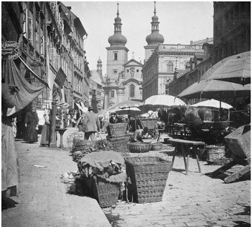
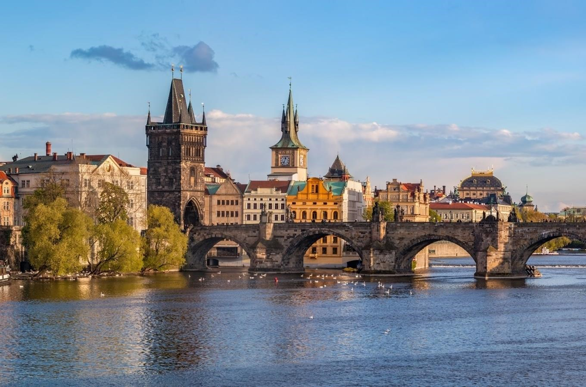
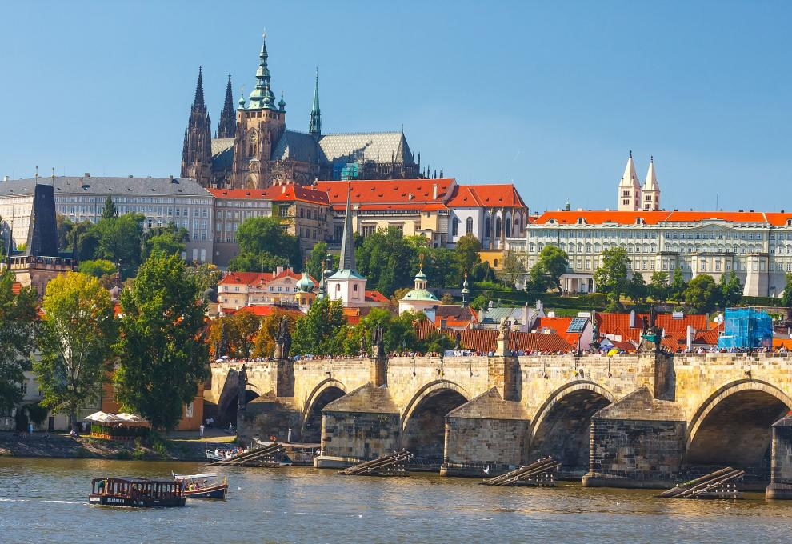
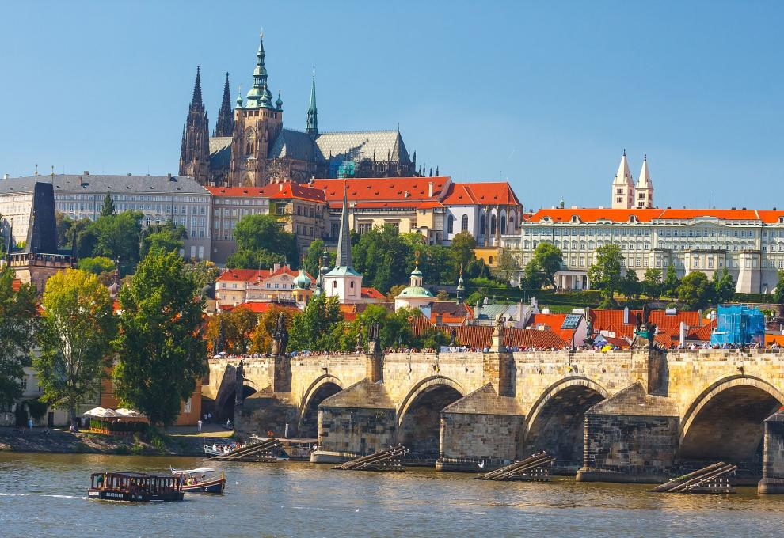

Popis hotelu
Překrásná historická budova hotelu Prague Golden Age se nachází přímo v centru Prahy mezi Staroměstským náměstím a Václavským náměstím v blízkosti Karlova mostu a dalších pamětihodností. Umístění hotelu umožňuje prohlídku pražských památek pěšky. Nejbližší stanice metra je vzdálena pouze 100 metrů.
Historie hotelu
Původně gotický dům z roku 1468 dostal svoji dnešní podobu v období pozdní renesance. V letech 2002 až 2004 provedl současný majitel budovy zdařilou rekonstrukci a vzhledem ke své jedinečnosti byl dům zapsán do seznamu nemovitých kulturních památek chráněných UNESCO. Pro Vaše pohodlné ubytování je připraveno 8 elegantních a prostorných dvou až čtyřlůžkových pokojů a apartmánů, které jsou vybaveny originálním starožitným a historickým nábytkem, a 2 economy pokoje. V některých pokojích se dochovaly i původní malované stropy ze 17. století, v jiných pak gotické a renesanční klenby.
Pamatky
Karlův Most
Karlův most je nejstarší stojící most přes řeku Vltavu v Praze a druhý nejstarší dochovaný most v Česku. Po pražském mostě Juditině, kamenném mostě v Písku a mostě v Roudnici nad Labem jde v Čechách v pořadí o čtvrtou kamennou mostní stavbu.
Václavské náměstí
Král Karel IV. založil Nové město pražské dekretem vydaným 8. března 1348. Základní kámen byl položen 26. března téhož roku.[5] Plán města obsahuje celou řadu otevřených prostranství určených pro trhy. Jedním z nich byl i Koňský trh. Na jihovýchodním (horním) konci náměstí končilo u novoměstských hradeb. Koňský trh byl městu určen jako jedno ze dvou hlavních tržišť, původně se nazývalo Koňský trh, zatímco na Karlově náměstí byl Dobytčí trh, na Senovážném náměstí Senný a obilný trh a na dnešním Jungmannově náměstí Kurný trh.
Pražský hrad
Pražský hrad je nejvýznamnější český hrad stojící na skalnatém ostrohu nad řekou Vltavou v centru Prahy, na vrchu Opyš. Od 9. století býval sídlem českých knížat, později králů a od roku 1918 je sídlem prezidenta republiky. Dvakrát v dějinách se stal hlavní rezidencí císaře Svaté říše římské.
Pražský orloj
Staroměstský orloj nebo také Pražský orloj jsou středověké astronomické hodiny umístěné na jižní straně věže Staroměstské radnice v Praze. Orloj je poprvé historicky doložen v listině z 9. října 1410 dochované v opisu. Orloji uprostřed dominuje astronomický ciferník a pod ním kalendářní deska.
 
